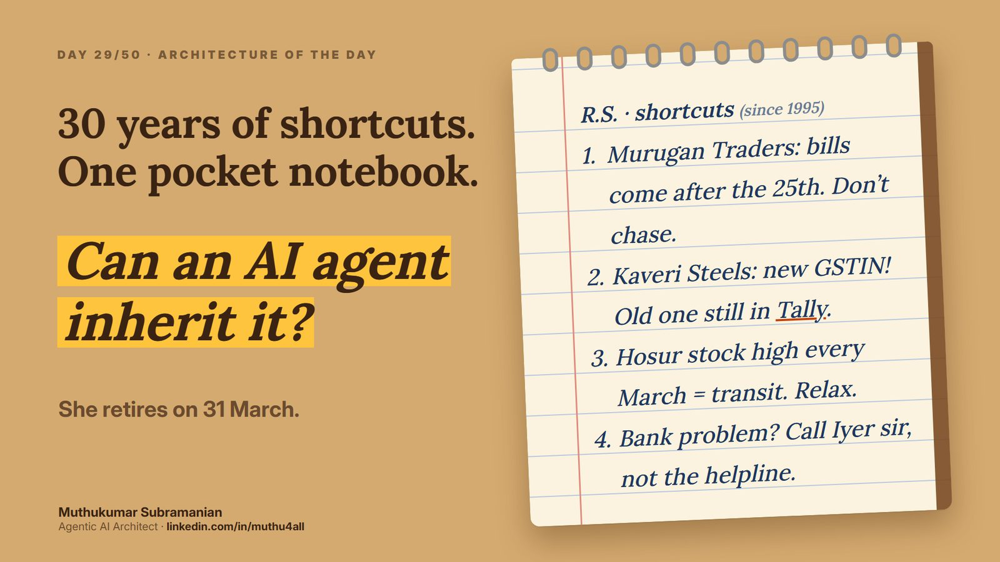
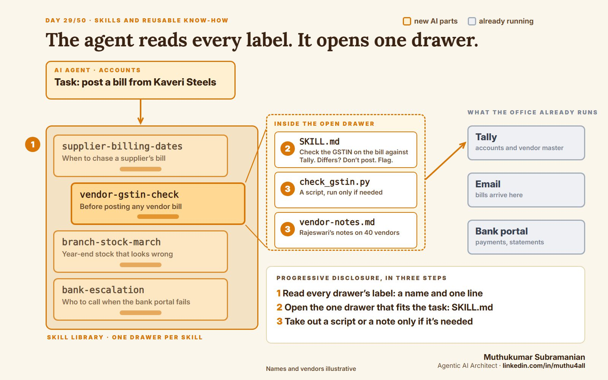
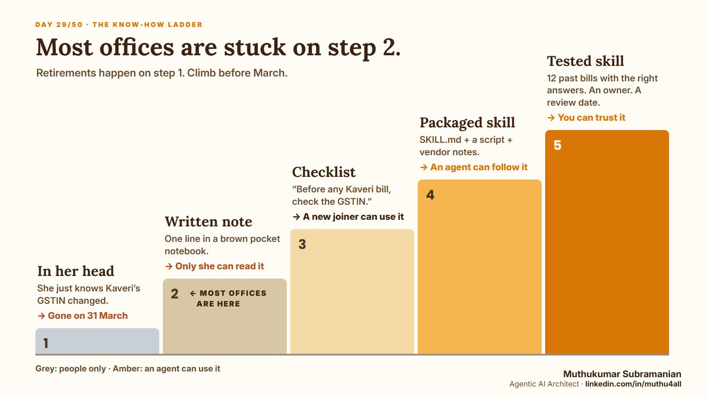
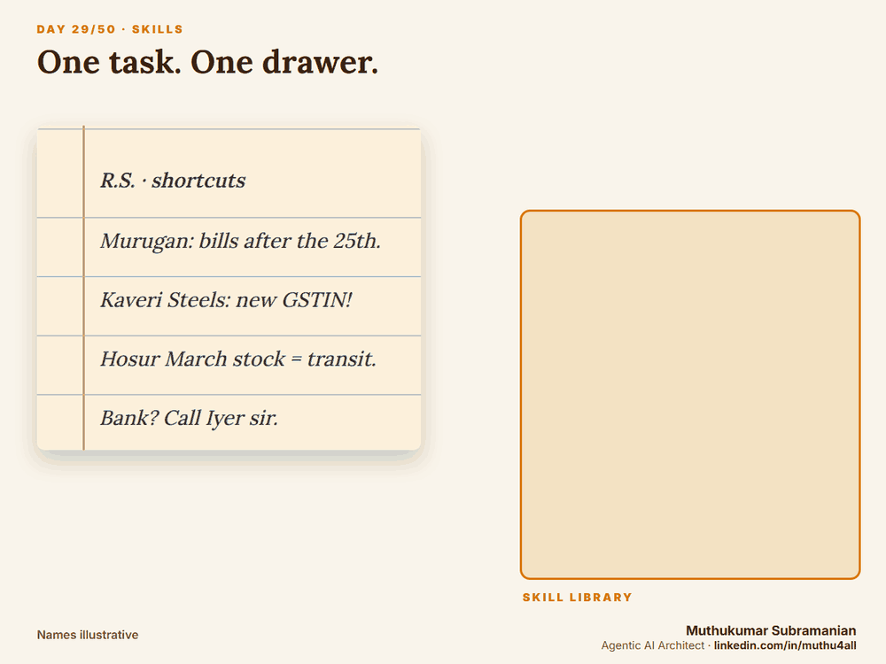

Your Best Accountant Retires in March. Can an AI Agent Inherit 30 Years of Know-How?
By Muthukumar Subramanian · Agentic AI Architect

Every office has one person who knows why the numbers look wrong. One day, she retires.
At an auto-parts distributor in Ambattur, that person is Rajeswari. Thirty years in accounts. She retires on 31 March, the day the financial year closes, which tells you everything about her sense of timing.
Last week I watched her close a month. She barely opened the manual. She opened a small brown notebook instead.
→ "Murugan Traders: bills come after the 25th. Don't chase before."
→ "Kaveri Steels: new GSTIN. Old one still in Tally!"
→ "Hosur stock looks high every March. It's transit. Relax."
→ "Bank problem? Call Iyer sir, not the helpline."
Four lines. Each one has saved the company a day, a penalty or a bad night's sleep. (Rajeswari, the company and the notebook are a composite, and every detail is illustrative. You've met her, though.)
The MD asked me a fair question: "Can our AI agent just learn all this before she goes?"
Partly. And how much depends on an architecture most people haven't heard of yet.
The architecture today: skills
A skill is a folder of know-how that an agent picks up only when a task needs it. Anthropic launched Agent Skills in October 2025 and published the format as an open standard that December. OpenAI's Codex and ChatGPT, GitHub Copilot in VS Code and Google's Gemini CLI now read the same kind of folder.
Here's how it works:
→ Each skill is a folder with a SKILL.md file: a name, a one-line description, then plain instructions. It can also hold scripts and reference files.
→ At the start, the agent reads only the names and descriptions. A hundred skills cost it almost nothing.
→ When a task matches, it opens that one skill, and opens the scripts or reference files inside only if it needs them.
Anthropic calls this progressive disclosure. I call it a filing cabinet: the agent reads the labels on the drawers and opens only the drawer it needs.

I've been in IT for 25 years, at Infosys and then as a consultant and fractional executive, across everything from legacy systems to agentic AI. The outage that hurt most was never the code. It was the day the person who knew why walked out.
Where AI plugs in now: capture while she's still here
Don't start by automating Rajeswari's job. Start by writing her notebook down, with her in the room.
→ Sit with her through one real month-end close. Record what she checks, and more importantly, what makes her stop.
→ Turn each notebook line into a small skill. "Before posting any Kaveri Steels bill, check the GSTIN on the bill against the Tally master. If they differ, don't post. Flag it."
→ Let the agent advise for two months. It flags, she corrects, and every correction goes back into the skill.
By March you don't have an agent that replaces her. You have her shortcuts in a form that outlives her farewell lunch.
Where it's heading with agents: know-how you can install
Give it two or three years and I expect skills to look a lot like software packages:
→ A company skill library, versioned like code, with an owner and a review date on every skill.
→ Skills with tests: twelve past Kaveri bills, and the answer Rajeswari would have given for each one.
→ Agents across Tally, email and the bank portal that load the right skill for the task in front of them and nothing else.
→ Skills you buy. A CA firm in Tiruppur that has done textile GST for 20 years sells "GST reconciliation for textile exporters" as a skill, not as a seminar.

Watch it work

Pros
→ Know-how stays when people leave, instead of leaving in a farewell bag
→ The agent loads only what the task needs, so a big library doesn't confuse it
→ A good skill doubles as training. The new joiner reads the same SKILL.md the agent does
Cons
→ Skills go stale quietly. Kaveri changes its GSTIN again, and nobody updates the drawer
→ A skill with scripts is code. Install one from a stranger and you've handed your agent a stranger's instructions
→ People can feel their judgement is being extracted, and they're not wrong to ask why
The hard parts: what a skill can't carry
Here's my honest answer to the MD. Some of it won't transfer.
Rajeswari doesn't know everything she knows. The "Hosur in March" line exists only because something went wrong in 2011. Half her shortcuts will surface only when something goes wrong again, after she's gone. Interviews won't catch those. Shadowing catches some.
Iyer sir picks up because it's her. A skill can store his number. It can't store twenty years of trust.
And the new case, the one her notebook never covered, still needs a person who thinks like her. A skill holds yesterday's judgement. Tomorrow's still needs someone.
A skill can carry what she knows. It can't carry who trusts her.
Then there's the career question, and it's the one I'd take most seriously. Rajeswari is leaving anyway. Her 38-year-old colleague isn't. If "capture your know-how" sounds like "train your replacement", people will write thin skills and keep the real shortcuts in their heads. Fair enough. So credit the author on every skill, pay for it, and make skill owner a role people want.
Two emerging roles fit here, and the titles are still settling. A forward deployed engineer (FDE) works inside the customer's team on their real systems, not from a slide deck; this is the person who sits beside Rajeswari at month-end. A Context Engineer decides what an agent should see, and when; this is the person who turns a notebook line into a skill that loads at the right moment and not before.
The opportunity
Who pays: family businesses facing succession, mid-sized firms with ageing finance and operations teams, CA firms, and every company whose one "she just knows" person is five years from retiring.
What it creates:
→ Know-how capture as a service. Six weeks of shadowing before a retirement, delivered as a tested skill pack.
→ Domain skill packs. Experts sell what they know (GST for textile exporters, year-end close in Tally, customs paperwork) as skills that agents install.
→ Skill upkeep. Owners, review dates, tests and version history, so a skill doesn't rot.
→ A second career for retired experts. Rajeswari, consulting two days a month, reviewing the skills that carry her name.
For twenty years we sold software. Next, we'll sell know-how in a folder.
Tools to try
Anthropic Agent Skills in Claude · OpenAI Codex and ChatGPT, which read the same SKILL.md format · GitHub Copilot in VS Code for skills inside a repo, and Microsoft Copilot Studio for business agents grounded in your SharePoint · Google Gemini CLI skills, or Gemini Gems for non-coders · LangGraph if you'd rather build your own skill loader.
Your turn
Can an AI agent really inherit 30 years of know-how? Yes or no.
Tag the person in your office who knows why the numbers look odd every March.
Day 29 of 50 · follow along. Tomorrow: Day 30 · "How's Your Knee After the Surgery?" Nobody Told the AI Agent to Remember That.